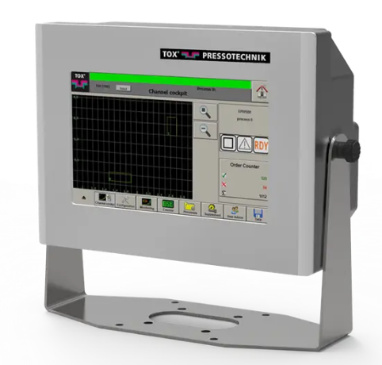

🟢 Press Station (Custom Eco-Line)
📋 Model: Tox IU-006 MAG015 | Jig Type :Cutting Application
🛠️ Maintenance:
🔧 ME - Pneumohydraulic Power Packages
⚡ EE - PLC & HMI Control System (Siemens)
📍 Station: TOX Four Column Presses
📄 Download TOX Press Frames & Accessories Datasheet (PDF)
Demo Custom Press Station Accessories

|

TOX® Pressing Monitor EPW 500 |
|
|
📁 Project Share Files |